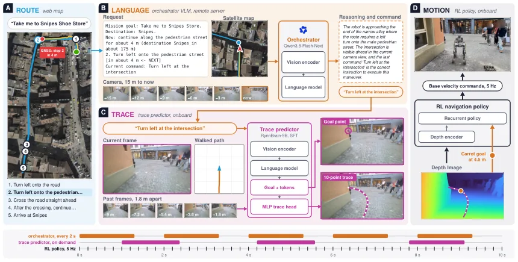
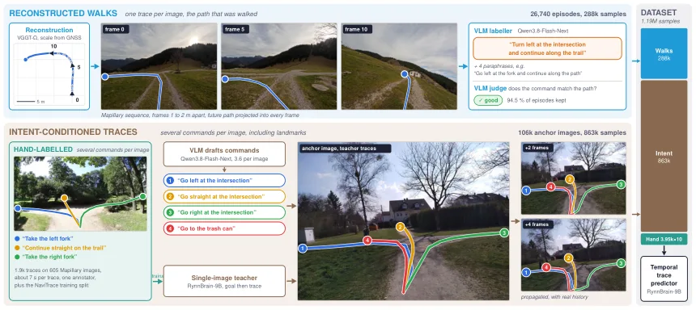
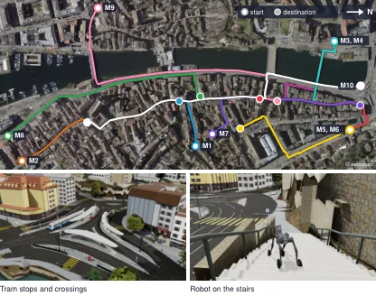
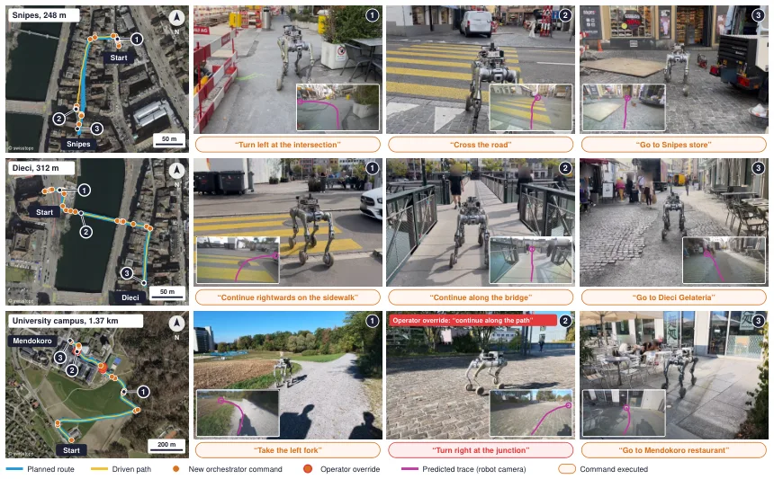
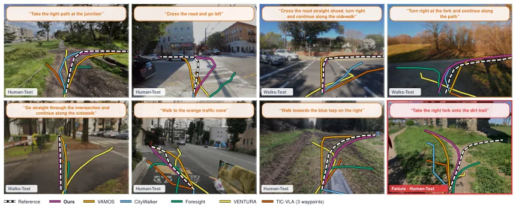
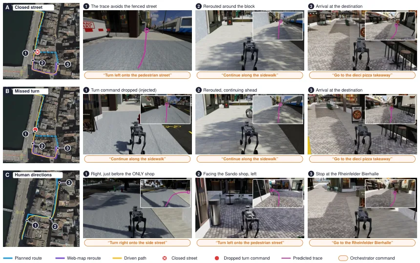

WayTrace：把网页地图的转向指令变成语言，再变成图像里的路径
WayTrace: A Map-to-Language-to-Trace Hierarchy for Embodied Urban Navigation
系统分三层：远程编排 VLM（Qwen3.8-Flash-Next，FP8，未微调，约 1.3 s/次决策）读网页地图的逐向指令、以机器人为中心的正射卫星裁片与最近 15 m 的相机图像，输出下一条原子命令；车载轨迹预测器（RynnBrain-9B + LoRA，1.19M 样本训练一轮）根据命令、5 帧历史（间隔 1.8 m）、当前帧与里程计走过的路径，回归当前图像里的 10 点轨迹；轨迹用立体深度抬到三维，RL 策略沿前方 4.5 m 的 carrot 点跟踪。仿真基准是 Isaac Sim 重建的苏黎世老城（0.91 km²、123 条斑马线），10 条任务共 4.68 km；完美 GNSS 下成功率 83.3%，7 m RMS 漂移下 63.3%，点目标基线降到 23.3%/10.0%，语言基线最多 7%。真实世界完成 426 m 全自主与 1.37 km（两次人工干预）任务。
success with perfect GNSS
success at 7 m GNSS error
longest real-world mission
correct turn side
作者、单位与技术谱系 · Research context
作者与单位
研究脉络
- NaVILA（2024）上游工作关系：让 VLM 输出度量语言动作、再由 RL 运动策略执行，是“语言动作 + 底层策略”的直接前身。[论文 §2-B]
- CityWalker / VAMOS（点目标导航）对比基线关系：用 GNSS 路径点做长距离导航的代表，本文用它们说明“点目标 + 定位误差”会系统性违规。[论文 §4 与表 I]
- SayCan / RT-H（语言分层）上游工作关系：在操作领域确立“高层语言子任务 + 低层策略”的分层范式，WayTrace 把同一结构搬到城市导航。[论文 §2-C]
合作网络
- ETH RSL–NVIDIA 合作Pascal Roth → NVIDIA Zurich关系：双重署名[论文 TeX 作者块]
- ETH RSL–UC Berkeley 合作Jonas Frey → UC Berkeley关系：论文共同署名[论文 TeX 作者块]
- WayTrace 项目页WayTrace → way-trace.github.io关系：官方项目页[WayTrace 项目页]
作者与单位来自 TeX 作者块；脉络依据论文自述与引用；未发现公开材料说明具体指导关系，故不推断。
方法本质拆解 · What actually changed
编排器不训练，轨迹器只训 LoRA
编排 VLM（Qwen3.8-Flash-Next）直接用现成权重与提示，不做微调；轨迹预测器以 RynnBrain-9B 为基座加 LoRA，在 1.19M 自动标注样本上训练一轮；RL 跟踪策略是单独训练的。因此系统能力主要来自现成模型组合与自动标注数据，而不是端到端联合训练。
约束是原子命令与图像空间轨迹
每条命令必须是单一机动（直行、左转、过马路），路径必须在当前图像里画出 10 个点，再用深度抬到三维；这等于强制“决策在语言层、执行在图像层”，不允许直接用 GNSS 坐标定义路径。GNSS 只用于选择当前指令，因此其误差不会直接位移路径。
三层异步闭环，无全局优化
推理时编排器约每 2 s 调一次（远程 1.3 s/次），轨迹器在 Jetson AGX Thor 上约 1.5 s/次，RL 策略持续跟踪旧路径；没有因子图、没有全局重定位，也没有对地图做匹配。异步设计保证机器人在等待新决策时不停下。
用语言切断对度量定位的依赖
长路线被拆成一系列原子指令，指令只需要“大致位置”就能选对，执行只需要当前图像就能走准；误差因此从“路径偏移”转成“指令时机偏差”。它没有做的是交通参与者交互、动态障碍重规划（只在附录给了改道演示），也没有验证多楼层/室内场景。
输入 = 网页地图逐向指令 + 卫星裁片 + 相机图像；改变的位置 = 把路线转成原子语言命令，再转成图像轨迹；约束/动作 = 语言接口 + 立体抬升 + RL 跟踪；直接效果 = 7 m GNSS 漂移下 63.3% 成功率，约为点目标基线 2.7 倍。

桥接价值Bridge
桥接价值
它把“地图给出的语义指令”与“图像里的可行走路径”接起来，绕过了“必须知道自己在哪”的前提：GNSS 只用来判断当前该执行哪条指令，不用来定义路径点，因此几米级漂移不会把机器人推到马路上。这正好补上我们做城市/园区导航时的一个空档——高精地图或点云地图往往没有逐向语义，而网页地图有。
方法与模块Method
方法摘要
编排层是现成 VLM，输入网页地图的逐向文字、以机器人为中心的正射卫星裁片、当前相机图与最近 15 m 的图像历史，输出一条原子命令与简短理由；执行层是车载轨迹预测器，把命令、5 帧历史、当前帧与里程计路径编码后解码出一个目标点并回归 10 点图像轨迹；底层用立体深度把轨迹抬到三维，RL 策略沿前方 4.5 m 的 carrot 点走。三层异步运行，机器人在等待新命令时继续沿旧路径运动。
可迁移模块
第一是“地图→语言→图像轨迹”的接口设计：把路径规划从度量空间搬到语言与图像空间，GNSS 误差只影响指令切换时机。第二是自动标注管线：用街景序列自动生成 1.19M 条“指令-轨迹”样本，避免人工标注，这套思路可以复用到园区道路或室内楼层导引。第三是分层评测协议：把成功率、斑马线违规率、道路违规率分开统计，能区分“到达了但违规”和“没到达”，比单一成功率更能反映安全性。

证据Evidence
关键证据与数字
仿真 10 条任务（152–864 m，共 4.68 km，14 个路口转弯、14 次过街、1 段楼梯），每种条件 3 个种子共 30 次：完美 GNSS 下 WayTrace 83.3%，点目标基线 CityWalker 36.7%、VAMOS 63.3%、OmniVLA 0%，语言基线（给 oracle 指令）最多 7%；GNSS 漂移 7 m RMS 时 WayTrace 63.3%，CityWalker/VAMOS 降到 23.3%/10.0%，WayTrace 的人行横道违规 <6%、道路违规 <1%，基线约多十倍。轨迹预测器在人工标注测试集上 NaviTrace 83.2（基线 ≤57.0），转弯方向正确率 97.9%；编排 VLM 关键错误率 5.1%（商用模型 3.2%，但慢 3–5 倍）。真实世界四条任务 248 m–1.37 km，Starbucks 426 m 全自主，Mendokoro 1.37 km 仅两次语言指令干预。
边界与下一步Limits & Next Step
边界与风险
仿真场景没有行人与车辆，指标只衡量是否遵守人行横道/人行道规则，不衡量与交通的交互；真实世界四条任务是定性演示，没有基线，也没统计失败率。编排 VLM 单次决策关键错误率约 5%，一条几公里、几十个转弯的路线会累积成较高失败率，作者自己把“提升编排器可靠性”列为首要后续工作。轨迹预测器只看前视相机、图像历史只覆盖约 9 m，横穿宽马路需要 20–30 s，进出命令的时机仍依赖编排器；在开阔广场等缺少可见参照的地方，它可能在转弯完成后继续画转弯路径。
下一步实验
先在我们园区/校园做小规模复现：用 OpenStreetMap 或现有地图生成逐向指令，固定同一 RL 底层，对比“点目标 + GNSS”与“WayTrace 式语言接口”在人为加入 2/5/10 m GNSS 偏移下的到达率与违规率。第二步把编排器换成可本地部署的模型，测关键错误率与延迟的权衡，并统计错误类型（过早转弯、转错路口、未切回直行）。第三步做累积失效分析：把单次决策错误率按 3%/5%/10% 注入，模拟长路线成功率曲线，判断多长的任务需要人工监督。







